How to use this volume
Eight complete system designs, each taught from zero, with the diagrams, the numbers, and the exam traps.
FACT-CHECK 2026-09-28: all factual claims in this volume were checked against live AWS documentation on 2026-09-28. Dollar figures are illustrative examples, not live quotes. Always confirm current rates on the Bedrock pricing page before relying on them.
Last verified: 2026-09-28 against AWS documentation. Service facts (Knowledge Base chunking defaults, Agent session TTLs, inference APIs, timeout limits, eval features) were checked against current AWS docs; dollar prices shown are illustrative and may change.
What you get
- 8 end-to-end designs covering every architecture the exam tests: RAG on Knowledge Bases, Bedrock Agents, sync vs async invocation, chatbot reference architecture, cost/latency/quality tradeoffs, eval loops, security hardening, and the three decision ladders.
- Each design runs as one flowing explanation: concept first, then the reason it exists, then the mechanics, with concrete numbers, the common misunderstanding, a diagram walkthrough, and the exam traps woven in.
- Designs connect to each other. RAG feeds the chatbot. The chatbot feeds the eval loop. The eval loop feeds the cost ladder. Read in order once, then use the rail to jump.
- A question bank at the end: 24 scenario questions (8 easy, 8 medium, 8 hard multiple-response) in the "most correct answer" style, each with full explanations of why every distractor is wrong.
Number hygiene: quotas and limits change over time. Numbers marked as current documented values come from AWS docs as of 2026. Numbers marked illustrative are worked examples to teach the math, not official pricing. The exam tests judgment and best practice, not memorized numbers.
1. RAG on Bedrock: Knowledge Bases end to end
The exam's center of gravity. If the scenario says "private documents," "must cite sources," or "answers grounded in company data," you are building this.
1.1 What a Knowledge Base is
Amazon Bedrock Knowledge Bases (KB) is the managed RAG service. RAG means retrieval-augmented generation: instead of retraining a model on your documents, you fetch the relevant passages at query time and hand them to the model along with the question, so it answers from those passages. The KB is the AWS-managed bundle that does the ingestion, chunking, embedding, indexing, and retrieval for you.
It exists because foundation models are frozen in time and know nothing about your company. Without RAG you get three failures: hallucinated facts (confident-sounding wrong answers), stale answers (training data months old), and no citations (no way to show which document an answer came from). The only alternative is fine-tuning, which is slower, more expensive, cannot cite sources, and goes stale the moment a document changes.
Two pipelines run inside it, and the exam tests that you know both.
- Ingestion (offline, on a sync schedule). Documents land in a data source, usually an S3 bucket. The KB parses them (PDF, DOCX, TXT, CSV, HTML, and more), splits them into chunks (see 1.3), converts each chunk into an embedding vector with the configured embeddings model (see 1.4), and writes the vectors plus chunk text and metadata into the vector store (see 1.5). You start this with a sync job, on a schedule or on demand.
- Retrieval (online, per user question). The question is embedded with the same embeddings model. The vector store returns the nearest chunks (top-k). Optionally a reranker re-scores them. The chunks are injected into the model's prompt as context and the model answers. With the
RetrieveAndGenerateAPI, Bedrock does all of this plus generation in one call and returns source citations. With theRetrieveAPI, you get raw chunks back and do the generation yourself through Converse (see 1.7).
Key exam split:
RetrieveAndGenerate
= one call, Bedrock generates the answer, citations included.
Retrieve
= chunks only, you own the prompt and the model call. If the scenario needs custom prompt control, guardrails inline, or streaming, you pick Retrieve plus Converse.
How to read this diagram
- Left edge, outside the AWS boundary: four data source types: structured data (databases, CSV), streaming data (events), unstructured data (PDFs, docs), multimedia (video, audio). This is the "raw material" stage. In the exam, the data-source list maps directly to the ingestion tool: multimedia points at Bedrock Data Automation or Transcribe before the KB.
- Center: Amazon S3. Everything lands here first. S3 is the staging area and the KB's native data source. Versioning on this bucket gives you rollback of source documents.
- Bottom branch (numbered 2 then 3): the RAG path. S3 flows into Amazon Bedrock Knowledge Bases, which chunks, embeds, and indexes, then writes vectors into Amazon OpenSearch. This is the ingestion pipeline from the list above, drawn as a real AWS diagram.
- Top branch (numbers 4, 5, 6, 7): an agentic path: SQS to Lambda to Bedrock Prompt Flow, results back to S3. This is how you add transformation or orchestration around the data. Note it is separate from the KB branch: Prompt Flows orchestrate prompts, they do not replace the KB's chunking and indexing.
- Right branch (numbers 8, 9): S3 to Lambda to Amazon Neptune. Neptune is the graph store: this is the GraphRAG pattern, for questions about relationships ("which supplier feeds which product line"). The exam mentions Neptune for GraphRAG. It is never the default vector store.
Per-component meaning and failure modes
| Component | What it does here | What breaks if it fails |
|---|---|---|
| S3 staging bucket | Durable landing zone for source documents | KB sync finds nothing new; retrieval goes stale. Fix: sync schedule plus S3 event triggers. |
| Bedrock Knowledge Bases | Parsing, chunking, embedding, sync orchestration | Bad chunking or a failed sync means the model answers from garbage or from nothing. Check the sync job status first. |
| OpenSearch | Vector index for similarity search | Slow or irrelevant retrieval. Fix: index tuning, hybrid search, reranking. |
| Neptune | Graph store for relationship queries | Only matters for GraphRAG scenarios; irrelevant to plain document Q and A. |
Scenario: "A company has 50,000 policy PDFs updated quarterly. Support agents need answers with citations. The model must not hallucinate." The correct answer chains: S3 data source, scheduled sync, Knowledge Base, RetrieveAndGenerate for citations. Distractors: fine-tuning (cannot cite, goes stale), Kendra alone (enterprise search, no generation), one shared prompt telling the model the policies (no grounding).
1.2 Data sources and sync
A data source is where the KB reads documents from. Supported sources: Amazon S3 (the native one), a web crawler (public or sitemap URLs), Confluence, SharePoint, and Salesforce. Each data source carries its own chunking settings and its own sync schedule.
Separate data sources matter because chunking is locked per data source at creation time; changing it later means recreating the data source. So documents that need different chunking live in different data sources: manuals in one (hierarchical chunking), FAQs in another (fixed-size). Sync schedules differ too: a product catalog that changes daily gets a daily sync, archived contracts get a one-time sync.
Sync runs on a schedule (hourly, daily, weekly, custom) or on demand. When the exam says "documents updated quarterly," the correct answer always includes an automated sync schedule, never a one-time manual load. Incremental sync picks up new and changed files; deleted files follow the sync's deletion policy.
Common misunderstanding.
"The KB reads my S3 bucket live at query time." It does not. Retrieval searches the vector index, which only knows what the last sync ingested. Stale answers after a document update mean the sync did not run, not that the model is broken. This is the first thing to check when "the KB does not know about the new policy."
1.3 Chunking strategy comparison
A chunk is a slice of a document small enough to embed and retrieve as one unit. Chunking is the single highest-impact decision in a RAG system: it decides what the retriever can "see." Too large and the chunk drags in irrelevant text that dilutes the match. Too small and it loses the context needed to answer.
The KB parses each document into raw text, then applies the strategy: fixed-size splits on token count with a configurable overlap percentage (overlap keeps sentences from being cut in half at boundaries). Hierarchical builds a tree: small child chunks for precise matching, each linked to a larger parent chunk that gets injected as context. Semantic splits at meaning boundaries (topic shifts), which costs more compute at ingestion. The strategy is locked per data source at creation.
| Strategy | How it splits | Best for | Cost and speed | When to pick it |
|---|---|---|---|---|
default |
About 300 tokens per chunk, AWS-managed | Prototypes, quick PoCs | Cheapest, fastest | You are validating the idea, not shipping. Never the answer for "production with structured docs." |
fixed_size |
Token count you choose, plus overlap percent | FAQs, short uniform pages, chat logs | Cheap, predictable | Documents are all roughly the same shape. The exam's safe answer for simple content. |
hierarchical |
Child chunks for matching, parent chunks for context | Manuals, legal documents, technical guides, anything with sections and tables | More storage (two levels indexed) | Structure matters: tables split across chunks, headings that give meaning. The exam's preferred answer for structured documents. |
semantic |
Splits at meaning boundaries | Long narrative docs where topic shifts matter | Slowest and most expensive ingestion | Quality is the top priority and ingestion cost is acceptable. Not "always best": the exam will offer it as a distractor when fixed-size is fine. |
none |
You pre-chunk before upload | You already have clean chunks from another pipeline | You pay the compute | An upstream system (Bedrock Data Automation, a custom parser) already produced chunks. |
| custom via Lambda | Your code decides | Exotic formats, per-document logic | Most operational overhead | Only when no built-in strategy fits. The exam penalizes custom code when a managed option works. |
Exam trap, stated plainly.
"Tables broken across chunks, answers miss the row context" points to hierarchical chunking or advanced parsing, not to a bigger generation model. "RAG returns confident but wrong answers and the chunks look relevant" is a retrieval-quality problem: debug chunking and embeddings first, the generation model last. Switching the model when retrieval is broken is the classic wrong answer.
1.4 Embeddings model choice
An embedding is a list of numbers (a vector) representing the meaning of a text chunk. Similar meanings produce nearby vectors. The embeddings model converts text to vectors at ingestion and converts the user question to a vector at query time. Both must use the same model and the same dimensions, or the math breaks.
The two exam-relevant choices:
- Amazon Titan Text Embeddings v2. The cheap default. Configurable dimensions: 1024, 512, or 256. Smaller dimensions mean less vector storage and faster search, at a small accuracy cost. Pick 1024 when quality matters most, 256 for massive corpora where storage and latency dominate.
- Cohere Embed. The multilingual pick, and it has an
input_typeparameter that distinguishes search queries from documents, which improves match quality. Pick it when the corpus or the users span many languages.
Embedding cost scales with tokens embedded. A 10-million-token corpus embedded once at ingestion is a one-time cost. The query side embeds only the question, which is tiny. This is why RAG is cheap to operate: the expensive part happens once, not per question. Dimension choice multiplies storage: 1024-dim vectors take roughly 4 times the space of 256-dim vectors.
Common misunderstanding.
"Bigger embeddings are always better." They are better up to a point, then you pay storage and latency for no measurable gain. And "I can swap the embeddings model later" is false without re-ingestion: changing the model means re-embedding every chunk, because vectors from different models live in different spaces and cannot be compared.
1.5 Vector store decision table
The vector store is the database that holds the vectors and runs nearest-neighbor search. The KB writes to it during ingestion and queries it during retrieval. You choose it when you create the KB.
| Vector store | What it is | Strengths | Weaknesses | Pick it when |
|---|---|---|---|---|
| OpenSearch Serverless | Managed OpenSearch, vector collections | Scales, managed, hybrid search built in | Highest cost of the native options | The default for production scale. The exam's standard answer for "large corpus, managed, low ops." |
| S3 Vectors | Vectors stored cheaply in S3 | Very cheap, simple | Smaller scale, fewer query features | Cost-sensitive dev, test, or small corpora. The exam frames it as the budget option. |
| Aurora PostgreSQL with pgvector | Relational database plus vector extension | One store for rows and vectors, SQL filters | You operate a database | You need relational queries and vector search together, for example "orders from last quarter about product X" where metadata filtering is heavy. |
| Neptune | Graph database | Relationship traversal (GraphRAG) | Not a general vector store | Questions are about relationships between entities. Never the default RAG answer. |
| Third-party (Pinecone, MongoDB, Redis) | External vector DBs via connectors | Existing investment, special features | Cross-service ops, data leaves AWS | The team already runs one. Otherwise the exam prefers native. |
Trap set the exam reuses.
DynamoDB as the vector store: wrong, DynamoDB holds metadata and session state, not vectors. ElastiCache as the vector store: wrong, it is ephemeral. Use it for caching, not durable vectors. One shared KB with prompt-level "only answer for your hotel" instructions for multi-tenant data: wrong, the exam wants separate KBs with IAM-enforced isolation per tenant.
1.6 Retrieval configuration
Retrieval configuration decides which chunks reach the model. Three knobs: how many (top-k), which subset (metadata filters), and how good (hybrid search plus reranking).
- Top-k. The number of chunks returned per query. Small k (3 to 5) is cheap and focused. Large k (20+) feeds more context but costs tokens and can drown the model in noise. Tune it: start around 5, raise it only if answers miss information that exists in the corpus.
- Metadata filters. Each chunk can carry metadata (source file, department, date, tenant id). Filters restrict retrieval to a subset before similarity ranking, for example "only the 2026 policy documents." This is also how multi-tenant isolation works at the data layer, combined with separate KBs or IAM scoping.
- Hybrid search. Vector search finds meaning; keyword search finds exact terms (product codes, names, error strings). Hybrid runs both and merges the results. Use it when queries contain exact identifiers that pure semantic search mangles.
- Reranking. A second model re-scores the top-k chunks for true relevance to the question, because vector similarity is not the same as relevance. This is the fix for "retrieved chunks look related but the answer is wrong." Bedrock provides rerank models. Apply them after the first retrieval pass.
The debug order for bad RAG answers (memorize this). First, check retrieval: are the right chunks coming back? If not, fix chunking, embeddings, or filters. Second, check relevance: chunks look close but are not truly relevant, so add reranking or hybrid search. Third, check generation: the model ignores the provided context, so strengthen grounding in the prompt or add a contextual grounding check. Never start by swapping the generation model.
1.7 Converse integration and Guardrails placement
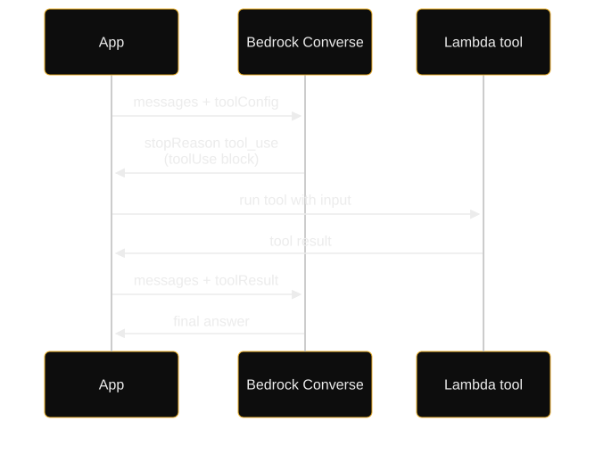
When you use the Retrieve API instead of RetrieveAndGenerate, you get chunks back and build the final prompt yourself, then call the model through the Converse API (Bedrock's unified request format across providers). This is the manual RAG loop, and it is where Guardrails slot in.
User question
|
v
[1] Retrieve API --> top-k chunks + citations + scores
|
v
[2] Build prompt: system instructions + chunks as context + question
|
v
[3] Converse API with guardrailConfig (identifier + version)
| Guardrails screen the INPUT here (prompt attack, PII, denied topics)
v
[4] Model generates answer from the provided context
|
v
[5] Guardrails screen the OUTPUT (toxicity, PII leak, grounding check)
|
v
Answer + source citations returned to the user
How to read this diagram
- Step 1, Retrieve: the only Bedrock call that touches the vector store. It returns chunks, each with a source URI and a relevance score. If the scores are low across the board, stop here: the problem is retrieval, and no prompt trick downstream will fix it.
- Step 2, prompt assembly: your code owns this. Put the chunks in a clearly labeled context block, add the user question, and add a grounding instruction ("answer only from the context. Say you do not know if the answer is not there"). This instruction is the cheapest hallucination defense you have.
- Step 3, Converse with guardrailConfig: one API call carries the model id, messages, inference config, and the guardrail identifier plus version. Guardrails evaluate the input before the model sees it: this is where prompt-injection attempts and PII in the question get blocked.
- Step 4, generation: the model answers from the context you supplied. Because you used Retrieve instead of RetrieveAndGenerate, you can also stream the answer with ConverseStream (see chapter 3).
- Step 5, output screening: Guardrails evaluate the answer before it reaches the user. In RAG this is where the contextual grounding check lives: it verifies the answer is supported by the retrieved chunks, which directly fights hallucination.
What breaks if a component fails
- Retrieve returns junk: check chunking strategy and sync freshness (sections 1.2, 1.3).
- Guardrail blocks legitimate questions: the denied-topic definitions are too broad or a content-filter threshold is too strict. Tune the policy, do not remove the guardrail.
- Citations missing: you used Retrieve but never passed the source URIs through to the response. RetrieveAndGenerate does this automatically.
Guardrails placement rule.
Guardrails apply on inputs, outputs, or both, configured per call. In RAG you almost always want both: input screening stops injection and PII, output screening plus the contextual grounding check stops hallucinations and leaks. The standalone
ApplyGuardrail
API applies the same policies to any text, even from non-Bedrock models.
"The application must stream answers, apply custom prompt templates, and enforce safety policies" points to Retrieve plus Converse with inline guardrailConfig. "Simplest possible grounded Q and A with citations" points to RetrieveAndGenerate. The exam tests whether you know which API owns which responsibility.
2. Bedrock Agents with action groups
RAG answers questions. Agents do things: call APIs, query databases, run multi-step tasks, and remember the session. The exam tests the anatomy cold.
2.1 Agent anatomy and the orchestration loop
A Bedrock Agent is a managed reasoning loop around a foundation model. You give it an instruction ("you are a travel assistant that can book and refund flights"), a foundation model to reason with, and an IAM role that scopes what it may touch. The agent then runs a ReAct loop (reason, act, observe): it reasons about the user request, decides which tool to call, calls it, reads the result, and repeats until it can answer. Tools come from action groups, knowledge comes from attached knowledge bases, and safety comes from attached guardrails.
This closes the gap a bare model call leaves open: a model alone cannot look up a live order status or cancel a booking. Bedrock runs the think-act-observe cycle, keeps session state, and returns a final answer, without you writing the orchestration loop yourself.
The orchestration loop, step by step.
- Invoke. Your app calls
invoke_agenton the bedrock-agent-runtime endpoint with anagentId, anagentAliasId(the prepared, versioned deployment, never DRAFT in production), asessionId(ties turns together. The agent keeps short-term memory for the session), and optionallyenableTraceto see the reasoning. - Reason. The model reads the instruction, the conversation history, the action-group API schemas, and any KB context, then decides: answer directly, retrieve from the KB, or call a tool.
- Act. If it calls a tool, Bedrock invokes the action group's executor (usually a Lambda function) with the function name and parameters parsed from the model's output.
- Observe. The tool result returns to the model, which reasons again. This loop repeats until the model produces a final answer or hits a stopping condition.
- Respond. The final answer streams back, with trace events if you enabled them.
Lifecycle terms the exam tests. After any configuration change you must run prepare-agent, which compiles the instruction, schemas, and KB attachments into a working agent. Until you do, the agent runs the old version: the classic "agent ignores my new action group" bug is a missing prepare-agent. Aliases point at prepared versions, so production traffic uses an alias, not the DRAFT.
Common misunderstanding.
"The agent remembers everything forever." Agent session memory is short-term (the idle session TTL is on the order of minutes, documented around 600 seconds in community notes. Verify at build time). For memory across days or weeks, you store conversation state in DynamoDB yourself (see chapter 4) or use a long-term memory service.
How to read this diagram
- Steps 1 and 2, left edge: users talk in Slack. Slack posts events to an API Gateway endpoint. API Gateway is the stable front door: it gives you throttling, auth, and a fixed URL. Any chat UI (web, mobile, Slack) fits this slot.
- Steps 3 and 4: a Lambda function verifies the message signature using a signing secret from Secrets Manager. This is webhook hygiene: never trust an inbound event without verifying it came from the claimed sender. Secrets Manager holds the secret, not the code.
- Steps 5, 6, 7, 8: a second Lambda drops the event onto SQS and immediately replies to Slack. The queue decouples the chat front end from the slow agent loop. A third Lambda drains the queue and calls the agent. This is the async pattern from chapter 3 applied to agents: the user never waits on a 15-minute Lambda.
- Step 9: the integration Lambda calls
invoke_agentwith a session id, then posts the result back to Slack in step 10. - Right side, box A: Amazon Bedrock Agents with an Action Group whose executor is a Lambda function, connected through a resource-based access policy. This is the tool boundary: the agent can only do what this Lambda implements, and the Lambda's IAM role limits what the Lambda can touch. Least privilege lives here.
Per-component meaning and failure modes
| Component | What it does here | What breaks if it fails |
|---|---|---|
| API Gateway | Front door, throttling, request validation | Slack events rejected or throttled; agent never invoked. |
| Verification Lambda + Secrets Manager | Proves the event is really from Slack | Skipped verification lets forged events trigger the agent. Never remove this layer. |
| SQS queue | Decouples chat speed from agent speed | Without it, slow agent turns time out the webhook and the user sees errors. |
| Agent + Action Group + Lambda | Reasoning loop plus the actual tool | Agent ignores the tool: check prepare-agent ran after the schema change; check the resource-based policy lets the agent invoke the Lambda. |
2.2 Action group and Lambda contract design
An action group is a named set of tools the agent may call, backed by one executor. Two ways to define the tools:
- OpenAPI schema. You describe a REST API (paths, methods, parameters, request and response shapes). Use it when the tool already exists as an HTTP service.
- Function schema. You define simple named functions with parameters directly. Use it for lightweight tools where writing an OpenAPI file is overkill.
The executor is usually a Lambda function. Bedrock calls it with a structured event: the action group name, the function (API path or function name), and the parameters the model extracted. Your Lambda runs the logic and returns a structured result. This input/output contract is the whole integration: the model only ever sees the schema, never your code.
Designing the contract well. Keep functions small and single-purpose ("getOrderStatus" not "doOrderStuff"). Name parameters exactly as the business means them. Return compact JSON: every token the tool returns gets fed back into the model's context, so verbose tool output burns money and context window. Validate inputs in the Lambda; the model will occasionally invent a parameter value, and your code is the last line of defense.
Model's view (the schema) Your code (the executor)
--------------------------- ------------------------
Action group: "orders-api"
function: getOrderStatus
param: orderId (string, required)
param: includeItems (boolean)
function: cancelOrder
param: orderId (string, required)
param: reason (string)
Bedrock --invoke--> Lambda event: Lambda --returns--> {
{ actionGroup, function, "statusCode": 200,
parameters: {orderId: "A-123"} } "body": {"status": "shipped",
} "eta": "2026-10-02"}
}
How to read this diagram
- Left column: everything the model knows about your tools. It never sees code, databases, or credentials. If a capability is not in the schema, the model cannot use it. If a parameter is ambiguous, the model will guess.
- Middle arrow: Bedrock translates the model's tool call into a Lambda event. The event carries which function to run and the parsed parameters. Your Lambda dispatches on the function name.
- Right column: what comes back. Keep it small and structured. The response re-enters the model's context, so a 50 KB dump costs tokens on every subsequent reasoning step.
Exam trap.
The resource-based policy on the Lambda must allow the Bedrock agent to invoke it. "Agent was working, then stopped calling the tool after a redeploy" often means the policy or the IAM role changed, not the model. Also: the exam distinguishes action groups (tools for one agent) from the multi-agent supervisor pattern (agents collaborating), covered in 2.7. Do not describe agent-to-agent talk as action groups.
2.3 Multi-step task decomposition: a traced example
Scenario. A customer writes: "My order A-123 arrived damaged. I want a refund and I want to know the return shipping label status." One message, three jobs: look up the order, issue a refund, check the label. Here is the loop, turn by turn.
Turn 1: user message arrives via invoke_agent (sessionId: sess-42)
Agent thinks: "I need order facts first. The KB has the refund policy;
the orders-api action group has live data."
-> KB retrieve: "damaged item refund policy"
returns: "Damaged items: full refund, no restocking fee."
-> action: getOrderStatus(orderId="A-123")
returns: {status: "delivered", total: 189.00}
Agent thinks: "Order exists and was delivered. Policy allows full refund.
Refund is a sensitive action: I should confirm with the user."
-> user: "I can refund $189.00 for order A-123. Confirm?"
Turn 2: user: "Yes, confirm."
Agent thinks: "Confirmed. Issue refund, then check label."
-> action: issueRefund(orderId="A-123", amount=189.00, reason="damaged")
returns: {refundId: "R-991", status: "processing"}
-> action: getReturnLabel(orderId="A-123")
returns: {labelStatus: "emailed", tracking: "1Z-884"}
Agent answers: "Refund R-991 of $189.00 is processing. Your return label
was emailed; tracking 1Z-884." (guardrails screen the output)
How to read this trace
- Decomposition: the agent split one message into three sub-tasks and ordered them by dependency (facts before actions). No workflow code was written; the ordering came from the instruction plus the tool schemas.
- Grounding: the refund policy came from the KB, the order facts from the tool. The model never invented the policy. This is the agent plus KB combination the exam calls the standard production pattern.
- The confirmation gate: the agent paused before the money-moving action. In production you enforce this with an approval flow (section 2.5), not by hoping the model asks.
- Session continuity: turn 2 works because the sessionId carried the order context forward. A new sessionId would start over.
2.4 Agent plus Knowledge Base plus Guardrails: the combined architecture
The exam's "holy trinity": the agent reasons and acts, the KB grounds it in documents, and Guardrails keep it safe. All three attach to the same agent.
+-------------------------+
| Amazon Bedrock Agent |
| instruction + FM + |
| IAM role |
+------+------+-----+----+
| | |
+----------------+ | +----------------+
| | |
[Action groups] [Knowledge bases] [Guardrails]
Lambda executors S3 docs, chunked, input + output
via OpenAPI or embedded, indexed screening, PII
function schema (chapter 1) filters, grounding
| | |
Live systems: Policies, manuals, Blocks injection,
orders, CRM, product docs toxicity, leaks
payments
Tracing: enableTrace on invoke_agent
Deploy: prepare-agent, then alias; production uses the alias
How to read this diagram
- Center box: the agent itself. The IAM role on the agent is the security boundary: it decides which KBs the agent may query and which action-group Lambdas it may invoke. Scope it to exactly those resources.
- Left branch: action groups reach live systems. These are the only path by which the agent changes the world. Every write action here should have an approval gate (2.5).
- Middle branch: knowledge bases supply documents. The agent queries them with the same retrieval machinery as chapter 1. Stale KB sync means stale agent answers: same debug order applies.
- Right branch: guardrails screen both the user input (prompt injection, PII, denied topics) and the agent's final output (toxicity, PII leak, grounding). They do not screen intermediate tool calls: validate tool inputs in your Lambda.
- Bottom row: operations. Tracing shows the reasoning path for debugging. Prepare-agent plus alias is the deployment discipline. Production never points at DRAFT.
2.5 Approval flows for sensitive actions
A human-in-the-loop gate stands before the agent does anything irreversible: refunds over a threshold, production config changes, external emails. The pattern is AWS Step Functions with a task token (a callback handle the workflow waits on): the workflow pauses, notifies a human (email, Slack, ticketing), and resumes only on approval. The agent's tool call triggers the workflow instead of doing the action directly.
Step Functions and not Lambda, because Lambda caps at 15 minutes while a human approval can take hours. Step Functions can wait days on a task token, and it gives you timeouts, retries, and an auditable execution history. This is the same reason the exam rejects Lambda for long-running orchestration everywhere.
Agent calls action: requestRefund(orderId, amount)
|
v
Lambda (action-group executor) --starts--> Step Functions execution
| |
|<-- returns "pending approval" +-- Task token: wait for human
| to the agent +-- Notify approver (SNS/Slack)
Agent tells user: |
"Refund requested, awaiting approval." +-- Approved? issue refund via API
+-- Rejected? record reason
+-- Timeout (24h)? escalate
"Specialist agents must collaborate, use tools, keep memory for weeks, and get human approval for actions over $100k." The correct set: a multi-agent framework for orchestration, MCP or action groups for tools, DynamoDB for weeks-long memory, Step Functions for the approval workflow. Distractors: a single prompt (does not scale), Lex (conversational UI, not autonomous orchestration), Lambda alone for the approval wait (15-minute cap).
2.6 Tracing and debugging
With enableTrace on invoke_agent, Bedrock returns the reasoning trace: the model's intermediate thoughts, which KB queries it ran, which tools it called with which parameters, and what each returned. This is the agent equivalent of a stack trace.
The debug order for agents.
- Agent ignores a new or changed action group: was prepare-agent re-run? Is production traffic on the alias pointing at the prepared version? This is the number one agent bug on the exam.
- Agent calls the tool with wrong parameters: the schema is ambiguous. Rename parameters, add descriptions, make required fields required.
- Agent loops or never finishes: add stopping conditions: max iterations, a Step Functions timeout around the whole invocation, and instructions that say when to stop and ask the user.
- Agent answers from stale documents: the KB sync did not run. Same fix as chapter 1.
- Access denied on tool invocation: the Lambda resource-based policy or the agent's IAM role does not allow the call.
For production observability, X-Ray traces the multi-step call chain across Lambda, Bedrock, and downstream services, and CloudWatch Logs Insights lets you query prompt and response content for confusion patterns.
2.7 Multi-agent and framework options
Multi-agent means several specialist agents collaborating under a supervisor. Bedrock Agents has a built-in supervisor/collaborator pattern: the supervisor agent decomposes the task and delegates to collaborator agents, which must themselves be prepared and aliased. Conversation history can relay between them. This is the managed path.
The code-first path the exam names. Strands Agents and AWS Agent Squad are the open-source frameworks for building multi-agent systems in code. MCP (Model Context Protocol) is the standard for agent-to-tool interaction: run MCP servers on Lambda for lightweight tools, on ECS for complex ones. AgentCore is the migration target for framework freedom: Runtime hosts agents built in any framework, Gateway exposes tools with credential management, Memory provides short and long-term agent context, plus Identity and Observability.
Common misunderstanding.
Describing inter-agent communication as action groups in the supervisor's instructions is wrong: the exam and the service use the built-in supervisor/collaborator mechanism. Action groups connect an agent to tools, not agents to agents.
Any scenario with "specialist agents for tax, investment, and estate planning must work together" points at the supervisor/collaborator pattern or Strands plus Agent Squad, never at one giant agent with thirty action groups. The exam rewards separation of concerns.
3. Sync vs async invocation patterns
Four ways to call a model, each with a different latency, payload, and cost profile. The exam tests the decision, not the syntax.
3.1 The API matrix
- Converse and ConverseStream. The unified API: one request shape works across Claude, Llama, Titan, Nova, and others. Supports tool use, inline guardrails (
guardrailConfig), prompt caching (cachePoint), structured output (outputConfig), and inference parameters (maxTokens, temperature, topP). ConverseStream returns tokens as they generate. Use this whenever you want provider portability. It is text-generation only: no embeddings. - InvokeModel and InvokeModelWithResponseStream. Provider-specific request bodies. You need this for embeddings (Titan Embeddings, Cohere Embed) and for provider-specific features that Converse does not expose (with
additionalModelRequestFieldsas the escape hatch inside Converse). The cost of getting the body wrong is aValidationException: for example Claude requiresanthropic_versionandmax_tokensin the InvokeModel body. - Batch inference. Asynchronous and cheapest: you put prompts in S3, Bedrock processes them over hours, results land in S3. About 50 percent cheaper than on-demand. No interactivity. This is the exam's answer for "thousands of documents to summarize overnight, no user waiting."
- Provisioned Throughput (PT). Reserved model capacity on an hourly commit, typically 1 to 6 month terms. It buys latency guarantees and throttling protection for steady baseline traffic, not lower cost. You must invoke the provisioned model ARN, not the base model id: the classic exam bug is buying PT and still calling
invoke_modelwith the base model id, then getting throttled on the on-demand path. - Cross-region inference profiles. Invoke the profile id (
us.,eu.,apac.,global.prefixes) instead of the bare model id for automatic failover when a model is unavailable in your region. This is availability routing, distinct from cost routing (prompt routers) and reserved capacity (PT). Three different mechanisms, three different exam answers.
Need API / pattern
---------------------------------- ----------------------------------------
Same code for Claude, Llama, Titan Converse / ConverseStream
with tool use and guardrails
Embeddings InvokeModel (Converse cannot do vectors)
Provider-specific feature InvokeModel, or Converse with
additionalModelRequestFields
Real-time token streaming ConverseStream /
InvokeModelWithResponseStream
Async, hours OK, cheapest Batch inference (S3 in, S3 out)
Steady baseline + latency SLA Provisioned Throughput, invoke the
provisioned model ARN
Model missing in my region Cross-region inference profile id
How to read this diagram
Read it as a lookup table, top to bottom: find the row whose "Need" matches the scenario's hardest constraint, read right for the answer. The exam writes scenarios where two rows look plausible. The tiebreaker is always the constraint stated most strongly. "Must stream tokens to the browser" beats "wants the cheapest option" because streaming is a hard requirement and cost is a preference.
Common misunderstanding.
"Converse and InvokeModel are interchangeable." They are not: embeddings need InvokeModel, unified multi-provider code needs Converse. And "guardrails only work with Converse" is false: the standalone
ApplyGuardrail
API works with any model, including non-Bedrock ones.
3.2 The decision ladder: latency, payload, use case
| Pattern | Latency | Payload limits | Cost profile | Use when |
|---|---|---|---|---|
| Sync Converse / InvokeModel | Seconds, one round trip | Request/response within API limits | On-demand per token | Interactive chat, single-shot Q and A, tool calls that finish fast. |
| Streaming (ConverseStream) | First token in well under a second typically | Long outputs fine; API Gateway has its own payload and timeout limits | Same as sync | Any user-facing generation: perceived latency drops even though total time is similar. |
| Async via queue (SQS + Lambda + Bedrock) | Minutes | Decoupled: no API Gateway timeout pressure | On-demand per token | Agent loops, multi-step work, anything slower than the front-door timeout. The Slack agent diagram in chapter 2 is this pattern. |
| Batch inference | Hours | Bulk S3 input | About 50 percent cheaper than on-demand | Nightly summarization, bulk classification, eval runs. No user waiting. |
| Provisioned Throughput | Guaranteed, no throttling at committed rate | Same as sync | Hourly commit; cheapest per token only at high steady utilization | Predictable baseline traffic with a latency SLA. Hybrid: PT for baseline, on-demand for spikes. |
Concrete numbers (illustrative). A chat turn that takes 8 seconds of model time fits sync Converse behind API Gateway, but only just: API Gateway's integration timeout is 29 seconds, so any turn that can exceed that must move to streaming or the async queue pattern. An agent loop that averages 3 minutes per task cannot run synchronously behind API Gateway at all: queue it. A nightly job summarizing 20,000 tickets has no latency constraint, so batch inference halves the bill.
3.3 Timeouts and retries
The timeout chain. Every hop has a limit, and the smallest one wins. API Gateway: 29-second integration timeout. Lambda: 15-minute max. Bedrock model invocation: bounded by the model's own limits. Design so each hop's timeout is comfortably above the p99 of the hop below it, or decouple with a queue.
The retry policy. Use the SDK's exponential backoff with jitter for throttling (ThrottlingException) and transient 5xx errors. Never retry blindly on ValidationException: that means your request body is wrong and retrying will fail identically. Add a fallback model for hard failures: if the flagship model errors, retry once on a smaller model or serve a cached response. This graceful degradation is the resilience pattern the exam rewards.
Circuit breaking. For downstream tools called by agents, wrap calls in a Step Functions circuit breaker or a Lambda-level breaker: after N consecutive failures, stop calling for a cooldown period. This prevents a sick downstream from burning model tokens on doomed retries.
"2M requests per day baseline plus 10x Friday spikes with sub-3-second latency" points to hybrid: Provisioned Throughput for the baseline, on-demand via Lambda for the spikes, streaming for perceived latency. "Entirely SageMaker with GPU autoscaling" fails on cost and cold starts. "fixed EC2 for peak" fails on cost. The exam always punishes single-lever answers to multi-constraint scenarios.
Trap, stated plainly.
Provisioned Throughput does not fix nondeterministic outputs. If identical inputs give inconsistent answers, the fix is temperature 0, deterministic prompts, and prompt versioning, not more capacity. PT fixes throttling and latency, never randomness.
4. Chatbot and copilot reference architecture
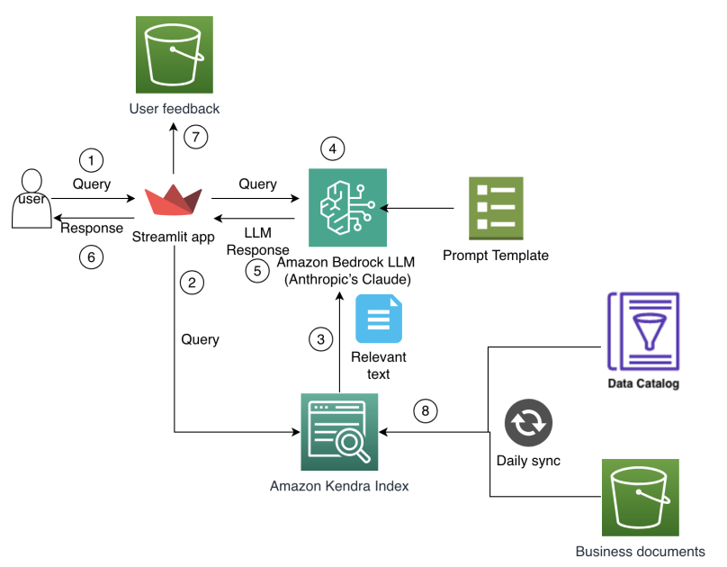
The canonical serverless chatbot: API Gateway, Lambda, Bedrock, with memory, streaming, caching, and auth. Memorize this shape; half the scenario questions are variations of it.
4.1 The reference architecture
User (web / mobile)
| HTTPS
v
+----------------+ Cognito / IAM authorizer
| API Gateway |-----------------------------+
+----------------+ |
| throttling, request validation v
v +-----------+
+-----------+ +------------------+ | Cognito |
| Lambda |-->| AppConfig | +-----------+
| (router) | | (model id, |
+-----+-----+ | flags, no |
| | redeploy) |
+-->+-----+-----+ |
| DynamoDB | session memory, TTL
| (sessions, | semantic cache
| cache) |
+-----+-----+
|
+---------+---------+
| Converse / | guardrailConfig inline
| ConverseStream | cachePoint for prompt caching
+---------+---------+
|
Bedrock models (Converse) / KB Retrieve / Agents
Observability sidecar: CloudWatch metrics + Logs + X-Ray traces
Audit sidecar: CloudTrail (who called what) + model invocation logs
How to read this diagram
- Top, the front door: API Gateway terminates HTTPS, enforces throttling per client, and validates requests. The authorizer (Cognito for users, IAM for service-to-service) runs before any Lambda code: unauthenticated traffic never reaches your bill.
- The router Lambda: thin by design. It loads the session from DynamoDB, assembles the prompt (system prompt, history, retrieved context), picks the model id from AppConfig, and calls Bedrock. Thin matters: Lambda bills by duration, so heavy lifting belongs in Bedrock or in downstream services.
- AppConfig: the model id and feature flags live here as runtime configuration. Switching from one model to another is a config change, not a deployment. This is the exam's canonical answer to "switch models without code changes": AppConfig plus Lambda plus API Gateway.
- DynamoDB: two jobs. Session memory: the conversation history per user, with a TTL so old sessions expire automatically. Semantic cache: previously answered questions and their answers, keyed by embedding similarity or a deterministic hash.
- Bedrock: Converse for generation with guardrails inline and prompt caching on the static prefix; Retrieve for the RAG path; invoke_agent if the chatbot escalates to tool use.
- Sidecars: CloudWatch for metrics (token counts, throttles, latency) and Logs Insights for prompt forensics; X-Ray for tracing the Lambda to Bedrock hop; CloudTrail for the audit trail of who called what. Model invocation logs for request and response forensics.
What breaks if a component fails
- API Gateway throttling misconfigured: legitimate users get 429s during peaks, or no throttling lets a runaway client burn the token budget.
- Router Lambda too fat: duration and cost balloon; move retrieval and assembly into parallel calls or a separate layer.
- DynamoDB session missing: the bot loses context mid-conversation. Always read-then-write the session atomically per turn.
- Hardcoded model id in the Lambda: every model switch becomes a deployment. Move it to AppConfig.
4.2 Session memory options
Session memory is the conversation history the model needs to stay coherent across turns. Someone must store it, load it per turn, and trim it when it grows past the context window.
| Option | Verdict | Why |
|---|---|---|
| DynamoDB | The answer | Single-digit millisecond reads, TTL expiry for old sessions, fine-grained access per user. The exam's standard session store. |
| ElastiCache (Redis) | Caching only | Fast but ephemeral: data loss on failover is acceptable for a cache, not for conversation state you promised to keep. |
| S3 | Wrong | Latency and access patterns are wrong for per-turn reads and writes. S3 is for documents and logs, not sessions. |
| Agent's built-in session | Short-term only | Fine within one agent session (minutes-scale TTL), not across days. Persist to DynamoDB for anything longer. |
Trimming strategy. Keep the last N turns verbatim and summarize older turns into a running summary stored alongside. This bounds the token cost per turn while preserving long-context coherence. The summary itself is generated by a cheap model call.
4.3 Streaming to the client
Users perceive latency as time-to-first-token, not time-to-last-token. Streaming cuts perceived latency dramatically with zero quality change.
The Lambda calls ConverseStream; Bedrock returns tokens as server-sent events. The Lambda forwards them to the client. Two client patterns: API Gateway with chunked transfer encoding (simplest, but bounded by the 29-second integration timeout), or WebSockets / direct SSE for long streams that outlive that timeout. For very long generations, the async queue pattern from chapter 3 applies: stream progress updates over the socket while the job runs.
Common misunderstanding.
"Streaming makes generation faster." It does not change total generation time at all. It changes when the user sees the first word. The exam tests this distinction when a scenario demands lower perceived latency without a quality change.
4.4 Caching layers
- Prompt caching. For repeated large static prefixes: system prompts, few-shot examples, long documents attached to every call. Configure a
cachePointin the Converse request on supported models. Cached input tokens cost less. Constraints: minimum token thresholds per model apply, and the TTL is short (about 5 minutes by default, up to an hour on supported models), so it helps high-frequency repeated prefixes, not occasional ones. - Semantic cache. For repeated semantically similar questions ("what is the refund policy" asked 10,000 ways). Store question embeddings and answers in DynamoDB or ElastiCache. On a new question, check similarity before calling the model. High hit rate only when queries repeat: the exam explicitly rejects semantic caching for highly personalized queries.
- Deterministic request hashing. For exactly repeated requests (same prompt, same parameters), hash the request and cache the response. Cheapest possible cache, zero model cost on hits.
4.5 Auth and model switching
Auth. Cognito user pools for end users (sign-up, sign-in, groups for tiered access), IAM roles for service-to-service calls. The authorizer on API Gateway enforces it before Lambda runs. For enterprise scenarios, IAM Identity Center permission sets give per-team access to models and KBs.
Model switching without redeploys. The trio from the blueprint: Lambda holds the routing logic, API Gateway provides the stable endpoint and throttling, AppConfig holds the model identifiers and feature flags as runtime config. Operations flips a flag. The Lambda reads it on the next invocation. CloudFormation is the distractor here: its changes are deployments, which violates "no code changes." EventBridge is the other distractor: it routes events, it does not store configuration.
"Operations must switch between three models without code deployments" is a select-all-that-apply with exactly three correct answers: AppConfig, API Gateway, Lambda. Every other combination violates one constraint. Memorize the trio.
Trap, stated plainly.
Two timeout traps: putting a slow agent loop behind API Gateway's 29-second integration timeout instead of the async queue pattern, and "fixing" slow-feeling responses by raising timeouts instead of streaming. Timeouts are guardrails, not performance tools.
5. Cost, latency, and quality tradeoffs
Every scenario question is secretly this chapter: three constraints, one budget. Learn the levers and the math, and the "most correct answer" becomes mechanical.
5.1 The five cost levers
Five independent ways to move the bill, each attacking a different part of the cost equation (tokens in, tokens out, requests, capacity).
| Lever | What it attacks | How it works | When it wins | Watch out |
|---|---|---|---|---|
| On-demand (baseline) | Nothing; pay per token | Default pricing, no commitment | Spiky, experimental, unpredictable traffic | Most expensive per token at steady high volume. |
| Prompt caching | Repeated input tokens | cachePoint on the static prefix; cached tokens billed cheaper |
Same long system prompt or document on most calls | Needs minimum token thresholds; short TTL (about 5 min default). Useless if every prompt is unique. |
| Batch inference | Per-token price for deferred work | S3 in, S3 out, processed over hours | Non-interactive bulk work: nightly jobs, eval runs | About 50 percent cheaper, but hours of latency. Never for interactive traffic. |
| Provisioned Throughput | Throttling risk and latency variance | Hourly commit for reserved model units, 1 to 6 month terms | Predictable steady baseline with a latency SLA | Not a cost saver for spiky traffic; you pay for idle capacity. Must invoke the provisioned ARN. |
| Smaller model / model cascade | Per-token price across the fleet | Router sends easy queries to Haiku or Nova Lite, hard ones to Sonnet or Opus | Mixed difficulty traffic, which is most traffic | Needs a quality gate: a classifier or confidence check that routes correctly, plus eval to prove no quality regression. |
The exam's favorite confusion pairs.
Prompt caching vs Provisioned Throughput: caching attacks repeated-input cost, PT attacks latency and throttling guarantees. "Same long system prompt on every call" is caching. "Throttling at peak with a steady baseline" is PT. Inference profiles vs prompt routers vs PT: availability routing vs cost-quality routing vs reserved capacity. The scenario verb picks the answer: "unavailable in region" is profiles, "route by complexity" is routers, "guaranteed throughput" is PT.
5.2 Worked monthly cost math (illustrative)
Scenario. A support copilot: 2,000,000 requests per day, each request averages 1,500 input tokens (1,200 of them a static system prompt plus KB context) and 300 output tokens. 30 days. All numbers below are illustrative, using round token prices to teach the math: assume $3 per million input tokens and $15 per million output tokens on the flagship model, and $0.30 / $1.50 on the small model.
Baseline (all flagship, on-demand, no caching):
Input: 2M req/day x 1,500 tokens x 30 days = 90B tokens
90,000M x $3/M = $270,000 / month
Output: 2M x 300 x 30 = 18B tokens
18,000M x $15/M = $270,000 / month
Baseline total: $540,000 / month (illustrative)
Lever 1, prompt caching on the 1,200-token static prefix (say 80% hit rate,
cached input billed at 10% of input price):
Cached portion: 2M x 1,200 x 30 x 80% = 57.6B tokens at $0.30/M = $17,280
Uncached input: (90B - 57.6B) = 32.4B at $3/M = $97,200
Output unchanged = $270,000
After caching: $384,480 / month. Saved about 29%.
Lever 2, model cascade: classifier routes 70% of easy queries to the small
model (assume routing is correct; eval proves it in chapter 6):
70% on small: input 63B tokens... roughly 1/10th the price
New blended total lands near $150,000 / month. Saved about 72% vs baseline.
Lever 3, batch for the 10% of traffic that is nightly report generation:
that slice moves to batch at ~50% off its on-demand price.
Combined realistic landing zone: $120,000-$160,000 / month, about a 70-78%
reduction, with no UX change for interactive users.
How to read this math
- Start from tokens, not requests. Cost equals input tokens times input price plus output tokens times output price. Requests only matter as a multiplier. The exam expects you to think in tokens.
- Output tokens dominate. Output price per token is typically several times input price, and you cannot cache output. Shorter answers and response size limits are real levers.
- Caching attacks the biggest repeated input. Here the 1,200-token static prefix is 80 percent of input tokens. Caching it at an 80 percent hit rate removes most of the input bill. If the prefix were unique per call, caching would save nothing: that is the exam's caching distractor.
- The cascade is the biggest lever because most queries are easy. The risk is misrouted hard queries, which is why the cascade needs the eval loop from chapter 6 as its safety net. Cost math without a quality gate is how you fail the scenario.
- PT is absent from this math on purpose. This workload is spiky support traffic, not a flat baseline. PT would add committed cost without matching the shape. The exam punishes PT as a pure cost play on bursty traffic.
The multi-lever rule.
"Token costs growing 30 percent per month, cut spend without UX degradation" is never a single-lever answer. The most correct option combines: smaller model for low-priority traffic, prompt caching for repeated prefixes, PT only for the predictable slice, prompt compression, and complexity-based routing. Single-lever options are distractors.
5.3 Latency levers and quality levers
Latency levers (what actually moves response time).
- Streaming: cuts perceived latency (time to first token), not total time.
- Smaller models: cut both per-token time and total time; the main latency lever alongside PT.
- Provisioned Throughput: removes throttling-induced latency spikes at load; guarantees capacity.
- Pre-computation and caching: semantic cache hits answer in milliseconds with zero model time.
- Parallel calls: independent retrievals and model calls run concurrently; the total is the max, not the sum.
- Prompt compression and context pruning: fewer input tokens means less prefill time.
Quality levers (what actually moves answer quality).
- Retrieval quality (chunking, embeddings, reranking): the dominant lever for RAG. Garbage in, garbage out.
- Model size: bigger models reason better; the cascade trades this deliberately.
- Temperature, top-p, top-k: low temperature (near 0) for deterministic factual tasks, higher for creative tasks. These control randomness, not cost.
- Prompt versioning and eval gates: chapter 6. Quality that is not measured regresses silently.
Common misunderstanding.
Temperature, top-p, and top-k are not cost controls. They shape randomness and quality. The exam offers them as distractors for cost scenarios and for consistency scenarios where the real answer is temperature 0 plus prompt control, or caching plus PT respectively. Keep the three ladders separate: cost levers, latency levers, quality levers.
"Sub-3-second latency with 10x Friday spikes" is a three-lever answer: PT for the baseline, on-demand overflow for spikes, streaming for perceived latency. Any option with only one of the three violates a constraint. Train yourself to count the constraints in the stem and check one lever per constraint.
Trap, stated plainly.
Buying Provisioned Throughput as a cost-saving move on spiky traffic: PT is an hourly commit that bills whether you use it or not, so on bursty traffic it raises the bill while looking like an optimization. And reaching for temperature or top-p as cost controls: they shape randomness, never the invoice.
6. Eval loop design
You cannot improve what you do not measure, and the exam knows it: eval questions punish anyone who debugs GenAI like traditional software.
6.1 The evaluation methods
Four ways to score model outputs, each with a different cost and trust profile.
| Method | Metrics | When to use it |
|---|---|---|
| Programmatic (automatic) | Accuracy, toxicity scores, stability; built-in or custom datasets | Objective, repeatable benchmarks. Fast and cheap, but blind to style and nuance. |
| LLM-as-a-judge | Correctness, completeness, faithfulness (hallucination), harmfulness, refusal behavior, style and tone; custom metrics definable | Human-like quality judgment at scale. The workhorse for RAG eval (retrieval relevance plus generation faithfulness) and agent eval (task completion, tool-use effectiveness, reasoning quality). |
| Human evaluation | Relevance, style, brand voice, any custom metric | Subjective judgment. Use your own team or an AWS-managed evaluation team. Expensive, so reserve for spot checks and brand-voice sign-off. |
| Bring-your-own-inference (BYOI) | Same as above, any model | Evaluating non-Bedrock models or full application responses end to end. |
Trap set.
Programmatic eval for style or brand voice: wrong, those are subjective and need human or LLM-as-judge. Human eval as the only eval for large-scale regression: wrong on cost and time. The exam wants automated gates with human spot checks. "Bigger model" as the fairness fix: wrong; fairness needs metrics plus A/B testing plus LLM-as-judge, continuously.
6.2 Metrics per task type
| Task type | Primary metrics | Best method |
|---|---|---|
| Summarization | Faithfulness (no invented facts), completeness (nothing important dropped), conciseness | LLM-as-judge, plus human spot check for tone |
| RAG question answering | Retrieval relevance (right chunks?), generation faithfulness (answer supported by chunks?), citation accuracy | LLM-as-judge with the retrieved context provided to the judge |
| Classification / extraction | Accuracy, precision, recall against labeled data | Programmatic: exact, repeatable, cheap |
| Agents / multi-step tasks | Task completion rate, tool-use effectiveness (right tool, right params), reasoning quality, steps to completion | LLM-as-judge on traces, plus programmatic checks on tool calls |
| Creative / brand voice | Style match, tone, brand compliance | Human eval; LLM-as-judge only with a carefully written rubric |
| Safety | Refusal correctness, toxicity, PII leakage, jailbreak resistance | Programmatic red-team suites plus LLM-as-judge |
6.3 LLM-as-a-judge setup on Bedrock
Bedrock model evaluations run judge models over your outputs and score them. You bring a dataset (prompts plus optional reference answers, the "golden dataset"), pick built-in metrics or define custom ones in plain language, and Bedrock runs the evaluation as a managed job.
How to set it up well.
- Build the golden dataset first. A few hundred representative prompts with known-good answers, versioned in S3. This dataset is the foundation of every gate below; without it you have no regression signal.
- Separate the judge from the contestant. Do not judge a model with itself when the stakes are high; use a strong independent judge model and document which one, so results are comparable across runs.
- Give the judge the rubric and the context. For RAG eval, the judge must see the retrieved chunks to score faithfulness. For agents, the judge must see the trace to score tool use. A judge without context invents its own standards.
- Calibrate against humans. Run the judge and a human panel over the same sample; measure agreement. If they disagree systematically, fix the rubric, not the model.
Concrete numbers (illustrative). A 500-prompt golden set judged at, say, $0.02 per judgment costs about $10 per gate run. That is cheap enough to run on every prompt change, which is the whole point: gates only work if they are cheap enough to never be skipped.
Common misunderstanding.
"LLM judges are objective." They have biases: toward longer answers, toward their own model family, toward confident tone. Calibration and a written rubric are what make them trustworthy, not the fact that they are automated.
6.4 Eval gates in CI/CD
A quality checkpoint that blocks deployment when scores regress. The pipeline: every prompt change, model change, or KB re-sync triggers the eval job against the golden dataset. Scores must clear thresholds before the new version ships.
Developer changes prompt / model / KB content
|
v
[Gate 1: programmatic regression] accuracy, toxicity, latency on golden set
| fail -> block, notify
v
[Gate 2: LLM-as-judge] faithfulness, completeness, style vs previous version
| fail -> block, notify
v
[Gate 3: canary] 5% of live traffic, compare metrics to baseline
| regression -> automatic rollback
v
[Gate 4: human spot check] sample of canary outputs, brand voice sign-off
|
v
Full rollout. Continuous monitoring after deploy: hallucination rate on
golden probes, semantic drift checks, bias drift alerts (chapter 7).
How to read this diagram
- Gate 1 is cheap and fast: programmatic checks run in minutes on every change. They catch crashes, format breaks, and toxicity spikes. Nothing subjective passes through here because nothing subjective can be measured here.
- Gate 2 is the quality comparison: the judge scores the new version against the old on the same dataset. You are looking for regressions, not absolute scores. A new prompt that scores 2 points lower on faithfulness does not ship, even if it is still "good."
- Gate 3 is the real world: canary traffic (a small live slice used to test a release) exposes what the golden set missed: novel phrasing, edge users, load effects. Automatic rollback on regression is the point. A canary you have to watch manually is theater.
- Gate 4 is the human backstop: small sample, high judgment. Brand voice and subtle tone issues live here.
- After deploy: continuous probes. Hallucination detection via golden datasets run on a schedule, output diffing for consistency, reasoning-path tracing for agents. Quality is a time series, not a one-time check.
The monitoring stack, mapped.
Near-real-time hallucination detection plus abnormal token spend with minimal custom work is: Bedrock evaluation jobs with LLM-based judgments for hallucinations, plus CloudWatch anomaly detection on token metrics. Building Glue and Athena pipelines for this is the high-overhead distractor. SageMaker Model Monitor is the wrong tool: it is built for tabular ML drift, not GenAI text quality. CloudTrail is audit, not metrics: CloudWatch is the metrics answer.
"Compare two models for summarization quality including brand voice" is LLM-as-judge for scale plus human eval for brand voice. "Validate a new prompt version before rollout" is regression testing plus canary. The exam always pairs the subjective metric with the human-involved method.
7. Security hardening for a production GenAI app
One in five exam questions lives in this domain. Under-prepared candidates fail here. The shape to memorize is defense in depth: no single layer is the answer.
How to read this diagram
- Read top to bottom as a request's journey. Every request passes every layer in order. A layer that is missing is a gap an attacker walks through, not an optimization.
- WAF and authentication are the perimeter: they decide who may talk to the application at all. Everything below assumes the caller is authenticated but not trusted.
- Prompt filter and model guardrails are the AI-specific layers: the prompt filter (Comprehend pre-filter, input sanitization) catches injection and PII before the model; guardrails enforce content policy on the way in and the way out.
- Output filter is the last content checkpoint: a Lambda post-processing step that can redact, reformat, or block before the response reaches the user. It catches what the model-level guardrails missed.
- VPC private network is the foundation: Bedrock traffic stays on the private backbone via VPC endpoints, so prompts and documents never traverse the public internet.
- What the diagram implies but does not draw: audit logging runs alongside every layer (CloudTrail for API calls, invocation logs for model traffic), and encryption (KMS at rest, TLS in transit) wraps all of it.
7.1 IAM least privilege
Every component gets exactly the permissions it needs and nothing more, scoped to specific resources: the router Lambda may invoke specific model ARNs, not bedrock:*.
The agent's role may read specific knowledge bases and invoke specific action-group Lambdas; the action-group Lambda's resource-based policy allows invocation only from the agent.
Concrete shape. One IAM role per component (router Lambda, agent, action-group Lambda, eval job), each with resource-level ARNs. For multi-tenant systems, separate KBs per tenant with IAM boundaries, never one shared KB plus prompt instructions. For enterprise-wide model access, a centralized GenAI gateway gives every team one audited path instead of direct Bedrock calls from everywhere.
Common misunderstanding.
"The model's built-in safety is enough." It is never the most correct answer for a sensitive audience. The exam expects layered controls: guardrails plus IAM plus network plus evaluation plus human review, matched to the risk.
7.2 KMS and VPC endpoints
KMS. Encryption at rest for everything the system touches: S3 document buckets, DynamoDB session tables, EBS volumes, and model invocation logs. Use customer-managed keys for compliance workloads so you control rotation and access. In transit, TLS is the default on all AWS API calls.
VPC endpoints (PrivateLink). Interface endpoints for the Bedrock planes keep traffic off the public internet: com.amazonaws.<region>.bedrock (control plane), bedrock-runtime (invocations), bedrock-agent and bedrock-agent-runtime (agents). With endpoints in place, Lambda functions in private subnets reach Bedrock with no NAT gateway and no internet path. "Keep Bedrock traffic private" is always the VPC endpoint answer.
7.3 CloudTrail and audit
The split the exam tests. CloudTrail records who called which API, when, from where: the audit trail. CloudWatch Logs holds application and decision content: what the prompt said, what the model answered. Trail is for compliance ("who accessed the KB last Tuesday"), Logs is for debugging ("why did the agent choose that tool"). Know which question each answers.
Model invocation logging. Bedrock can log full requests and responses to S3 or CloudWatch for forensics. In compliance environments these logs may contain PII, so encrypt them with KMS or disable the logging and rely on metadata-only records. Logging invocations to CloudWatch unencrypted in a healthcare scenario is an exam trap: the correct answer adds KMS or disables it.
Lineage. When a regulator asks "which data produced this answer," the answer is Glue Data Catalog registration plus metadata tags on documents plus source citations from RetrieveAndGenerate plus the CloudTrail audit trail. No single one suffices.
Concrete numbers (illustrative). CloudTrail records every Bedrock API call with caller identity, timestamp, and source IP. A mid-size chatbot fleet can generate tens of thousands of management events per day. Size trail storage and retention to your compliance window, and remember that Trails answer "who called what," never "how fast" or "how good.".
7.4 Guardrails layering
The control matrix (memorize).
| Control | What it does | Configured by |
|---|---|---|
| Content filters | Hate, insults, sexual content, violence, misconduct, prompt attacks | Severity threshold per category: NONE, LOW, MEDIUM, HIGH |
| Denied topics | Block subject areas, e.g. medical diagnosis, investment advice | Natural-language topic definitions |
| Word filters | Exact-match blocklists | Custom word lists |
| Sensitive information filters | PII detection across 30+ entity types, plus custom regex | Block or mask, per entity type |
| Contextual grounding check | Is the answer supported by the source content? | Threshold; the RAG hallucination check |
| Automated Reasoning check | Does the output violate a formal policy? | Natural-language policy rules; deterministic verification |
The layering pattern. Comprehend pre-filter on the input, then Guardrails on the model call (inputs, outputs, or both), then a Lambda post-processing step, then API Gateway response filtering. Each layer catches a different failure class, and the exam's children's-tutor scenario (block profanity in, prevent harm out, stop jailbreaks, ground facts) is solved by exactly this full stack.
The exam's favorite confusion set, drilled.
"Prevent the model from discussing medical diagnoses" is denied topics, not content filters. "Redact SSNs" is sensitive information filters, not word filters (word filters match exact strings. PII needs entity detection with block or mask). "Is this answer supported by the retrieved doc" is contextual grounding. "does this comply with the written policy" is Automated Reasoning. Match the control to the scenario verb.
7.5 PII redaction flow
An end-to-end pipeline that finds personal data at rest, catches it in flight, and blocks it at inference:
At rest (S3 document lake):
Amazon Macie scans buckets, finds PII at scale, labels findings
|
In flight (application path):
Amazon Comprehend detects PII entities in real time (30+ types),
Lambda redacts or masks before the text reaches the model
|
At inference (model boundary):
Bedrock Guardrails sensitive-information filters block or mask
PII on inputs and outputs
|
After (retention):
S3 Lifecycle policies expire raw logs and transcripts on schedule;
invocation logs KMS-encrypted or disabled in regulated workloads
How to read this diagram
- Macie works at rest and at scale: it scans S3 buckets and reports where PII lives. It does not sit in the request path. A scenario about "find PII across 10,000 documents in S3" is Macie.
- Comprehend works in flight: real-time entity detection on text passing through your pipeline. A scenario about "redact PII from chat messages before they reach the model" is Comprehend plus a Lambda.
- Guardrails work at the model boundary: block or mask per entity type on inputs and outputs. This is the last automated checkpoint before the model sees text and before the user sees the answer.
- Lifecycle and logging close the loop: PII you do not retain cannot leak. Expire transcripts on schedule, and treat invocation logs as PII-bearing unless proven otherwise.
"Protect PII in customer-service GenAI conversations with minimal custom work" is a select-three: Macie, Comprehend, Guardrails. The distractors swap in Translate (preserves meaning, zero protection) or Rekognition (vision service. Comprehend is the text answer). Count the planes: at rest, in flight, at inference. One service per plane.
8. Decision ladders
Three ladders the exam climbs again and again. The rule for all three: start at the cheapest rung that satisfies the constraints, and be able to say why you stopped there.
Each ladder is an ordered list of approaches from cheapest to most expensive for one decision: how to ground the model (grounding ladder), how to pay for inference (pricing ladder), and how to keep the system safe (safety ladder). Exam scenarios hand you constraints, not answers; the ladders turn "which approach" into a mechanical climb: start at the top, descend until every constraint is satisfied, stop. Section 8.4 walks all three at once.
8.1 Grounding ladder: prompt engineering to RAG to agents to fine-tuning
Cheapest, fastest
|
| 1. PROMPT ENGINEERING
| New format, tone, few-shot examples, chain-of-thought.
| Stop here when: no new knowledge is needed.
|
| 2. RAG / KNOWLEDGE BASES
| The model needs facts it was not trained on, or citations.
| Retrieval, not retraining. Handles changing documents.
| Stop here when: knowledge updates over time or must be cited.
|
| 3. BEDROCK AGENTS / AGENTIC
| The task needs actions: API calls, database queries,
| multi-step tool use, session memory across turns.
| Stop here when: the job is doing things, not just answering.
|
| 4. FINE-TUNING (SFT, continued pre-training, distillation)
| A new BEHAVIOR baked into the weights: consistent brand voice
| at scale, domain classification, a smaller model matching a
| larger one on a narrow task. Needs labeled data in S3 and
| usually Provisioned Throughput to serve.
| Stop here when: the same task repeats millions of times and
| per-token cost or baked-in behavior is the problem.
|
v
Most expensive, slowest
How to read this diagram
- Climb in order and stop at the first rung that works. Each rung costs roughly an order of magnitude more in time and money than the one above. The exam's core skill is stopping early.
- Rung 2 vs rung 4 is the most tested boundary. "Documents updated quarterly" or "must cite sources" is RAG. "Same task repeated millions of times and cost is the problem" is distillation to a smaller model. "Just needs a different tone" never leaves rung 1.
- Rung 3 is about actions, not knowledge. If the scenario's verbs are "look up," "book," "update," "notify," you are at rung 3. If the verbs are "answer from our docs," you are at rung 2.
- Fine-tuning needs data and serving. Labeled data in S3, a customization job, and usually Provisioned Throughput to serve the custom model. A scenario that mentions none of these but asks for fine-tuning is a trap.
8.2 Inference pricing ladder
On-demand
Spiky, experimental, unpredictable workloads. Pay per token, no commit.
|
Prompt caching
Repeated large static prefixes (system prompts, few-shot, long docs).
Cheaper input tokens. Needs minimum token thresholds, short TTL.
|
Batch inference
Non-interactive, hours-scale latency OK. About 50% cheaper. S3 in/out.
|
Provisioned Throughput
Predictable steady baseline, latency guarantees, throttling protection.
Hourly commit, 1-6 month terms. Invoke the provisioned model ARN.
|
Smaller model / model cascade
Route simple queries to Haiku or Nova Lite, complex to Sonnet or Opus.
A classifier or prompt router decides per query.
Hybrid (the exam's favorite "most correct"):
PT for the predictable baseline + on-demand for the peaks.
How to read this diagram
- Each rung attacks a different cost shape. On-demand fits variance, caching fits repetition, batch fits deferrability, PT fits predictability, smaller models fit mixed difficulty. Match the rung to the traffic shape, not to the budget alone.
- PT is a latency and throughput tool that happens to cost money. The exam repeatedly offers PT as a cost-saving answer for spiky traffic. It is wrong there. PT saves money only versus throttled, over-provisioned on-demand at steady high utilization.
- The hybrid answer exists because real traffic has two shapes. A flat baseline plus spiky peaks. One mechanism cannot serve both cheaply. When the scenario mentions both a baseline and spikes, the answer is almost always hybrid.
8.3 Safety control ladder
1. Prompt design
System prompts, grounding instructions ("answer only from context"),
output format constraints. Cheapest, always on.
2. Guardrails
Content filters, denied topics, word filters, PII filters,
contextual grounding, Automated Reasoning. On inputs, outputs, or both.
Via Converse guardrailConfig or standalone ApplyGuardrail.
3. IAM and network
Least-privilege roles, VPC endpoints, KMS, resource policies.
Controls who and what can reach the model and the data.
4. Evaluation
Continuous bias drift monitoring, hallucination probes on golden
datasets, LLM-as-judge safety metrics, alerting and remediation.
5. Human review
Step Functions approvals, human eval panels, manual sign-off.
Reserved for high-risk actions and sensitive audiences.
How to read this diagram
- Higher rungs do not replace lower ones. A guardrail does not excuse a missing system prompt, and human review does not excuse missing guardrails. The exam's sensitive-audience scenarios (children, healthcare, finance) always require multiple rungs.
- Rung 2 has six distinct controls. Match the verb. "Discussing" a subject is denied topics. "Toxic" content is content filters. "Exact strings" are word filters. "SSNs and names" are sensitive information filters. "Supported by the source" is contextual grounding. "Violates the written policy" is Automated Reasoning.
- Rung 5 is the costliest and the exam spends it carefully. Human review appears in answers only when the risk justifies it: money movement, irreversible actions, vulnerable users. For routine Q and A, rungs 1 through 4 suffice.
8.4 One scenario, all three ladders
Scenario. A bank wants a customer-service copilot. It must answer from 40,000 policy documents updated monthly, handle balance inquiries and card replacements (live core-banking APIs), block financial advice, redact account numbers, cost less than the current call-center spend, and get human approval before issuing any fee reversal over $500.
Walk the ladders.
- Grounding: monthly document updates plus citation needs put Q and A at rung 2 (Knowledge Bases). Balance inquiries and card replacements are actions, so rung 3 (Bedrock Agent with action groups). No fine-tuning: nothing here needs baked-in behavior.
- Pricing: support traffic is spiky, so on-demand is the base. The policy context repeats per call, so prompt caching applies. Fee-reversal reports run nightly, so batch inference covers those. No PT unless a steady baseline with an SLA emerges. A cascade routes simple FAQs to the small model.
- Safety: rung 1 grounding instructions. Rung 2 guardrails (denied topic "personalized financial advice," PII filter masking account numbers, contextual grounding on RAG answers). Rung 3 IAM scoping the agent to read-only banking APIs plus VPC endpoints. Rung 4 continuous eval on golden probes. Rung 5 Step Functions approval for fee reversals over $500.
Why this exercise matters.
This is exactly how the exam writes its hardest questions: one scenario, five constraints, each constraint mapping to one rung on one ladder. Extract the constraints, climb each ladder to the cheapest satisfying rung, and check that every distractor violates exactly one constraint. That procedure answers most of the exam's scenario questions.
Common misunderstanding.
"Fine-tuning fixes stale knowledge." It bakes knowledge into weights that go stale on the next document update. RAG keeps knowledge fresh because retrieval happens at query time. "Prompt caching and Provisioned Throughput are interchangeable cost tools." Caching cuts repeated-input cost. PT buys latency and throughput guarantees. "One guardrail replaces the safety stack." Guardrails are one rung; sensitive scenarios need the full ladder, and the exam always checks that you layered.
The exam's hardest questions hand you one scenario with five constraints and ask for the single best design. The procedure: extract each constraint, climb each ladder to the cheapest rung that satisfies it, and eliminate every option that violates exactly one constraint. If two options survive, pick the more managed, more serverless one.
9. Question bank
24 scenario questions in the exam's "most correct answer" style: 8 easy, 8 medium, 8 hard multiple-response. Every answer explains the correct choice and kills each distractor.
Chapter 1: RAG on Bedrock Knowledge Bases
A. Fine-tune a foundation model on the manuals each quarter.
B. Create a Bedrock Knowledge Base with an S3 data source on a quarterly sync schedule, and use RetrieveAndGenerate.
C. Paste the manuals into the system prompt of every chat call.
D. Build a custom vector database on EC2 with a self-managed embedding pipeline.
Correct: B. The KB handles ingestion, chunking, embedding, and retrieval as a managed service; the sync schedule handles quarterly updates; RetrieveAndGenerate returns citations. A is wrong: fine-tuning cannot cite sources and re-training quarterly is slow and expensive for knowledge that changes. C is wrong: 20,000 manuals do not fit in a prompt and there is no retrieval. D is wrong: custom EC2 builds lose to the managed service on operational overhead, the exam's default bias.
A. Switch to a larger generation model.
B. Change the data source chunking strategy to hierarchical and re-sync.
C. Increase the temperature to get more creative answers.
D. Add more few-shot examples to the system prompt.
Correct: B. The failure is structural: fixed-size chunking split a clause across a boundary, so no chunk contains the full context. Hierarchical chunking keeps child chunks linked to parent context, which is the exam's preferred fix for structured documents. A is wrong: the generation model is not the problem; retrieval is. C is wrong: temperature controls randomness, not retrieval structure, and higher temperature makes confident wrongness worse. D is wrong: few-shot examples do not repair broken chunks.
A. One shared Knowledge Base with a prompt instruction telling the model to answer only about the caller's brand.
B. One Knowledge Base per brand, with IAM policies scoping each team to its own KB.
C. One Knowledge Base with metadata filters on brand, plus IAM-enforced access boundaries per tenant.
D. Store the documents in DynamoDB and filter in application code.
Correct: B and C. B gives full isolation: separate KBs with IAM scoping is the exam's standard multi-tenant answer. C is also valid: metadata filters restrict retrieval per brand combined with IAM enforcement. A is wrong: prompt-level instructions are not a security boundary; the model can be jailbroken into leaking other brands' data. D is wrong: DynamoDB is not a vector store and cannot do similarity retrieval.
Chapter 2: Bedrock Agents
A. The foundation model is too small to use tools.
B. prepare-agent was not re-run after the configuration change.
C. The agent needs a larger context window.
D. The sessionId was reused across users.
Correct: B. Configuration changes only take effect after prepare-agent compiles them; until then the agent runs the old version. This is the number one agent bug on the exam. A is wrong: tool use is a schema-driven capability, not a size threshold. C is wrong: context window has nothing to do with a new tool being invisible. D is wrong: session reuse causes cross-talk, not missing tools.
A. One Lambda function that runs the whole workflow including waiting for the manager.
B. Bedrock Agent with action groups for validation, coverage, and payout calculation, plus a Step Functions workflow with a task token for the approval step.
C. A single long prompt that instructs the model to handle everything including approvals.
D. An SQS queue with a 15-minute delayed message for the approval.
Correct: B. Action groups give the agent its tools; Step Functions with a task token can wait days for human approval with timeouts, retries, and audit history. A is wrong: Lambda caps at 15 minutes and cannot wait two days. C is wrong: a prompt cannot enforce a real approval gate or wait on a human. D is wrong: SQS delay maxes out far short of two days and provides no approval semantics.
A. Bedrock Agents supervisor/collaborator pattern with prepared and aliased collaborator agents.
B. Action groups configured between the agents so they can call each other as tools.
C. DynamoDB for weeks-long conversation memory.
D. Amazon Lex as the orchestration layer between agents.
Correct: A and C. A is the built-in multi-agent mechanism: supervisor delegates to prepared, aliased collaborators with relayed conversation history. C is correct because agent sessions are minutes-scale. Weeks-long memory needs DynamoDB. B is wrong: action groups connect agents to tools, not agents to agents. The exam explicitly rejects this. D is wrong: Lex is a conversational UI service, not an autonomous multi-agent orchestrator.
Chapter 3: Sync vs async invocation
A. Converse API calls in a loop from Lambda.
B. InvokeModel for embeddings, batched through batch inference with S3 input and output.
C. Provisioned Throughput with the maximum model units.
D. ConverseStream with prompt caching.
Correct: B. Embeddings require InvokeModel (Converse is text-generation only), and batch inference is about 50 percent cheaper for non-interactive bulk work. A is wrong: Converse cannot produce embeddings at all. C is wrong: PT is for latency guarantees on steady traffic, not bulk cost savings. D is wrong: streaming does not apply to bulk embedding, and caching does not help unique inputs.
A. Buy more provisioned model units.
B. Change the code to invoke the provisioned model ARN instead of the base model ID.
C. Add exponential backoff retries to the existing calls.
D. Switch from InvokeModel to the Converse API.
Correct: B. PT capacity is only used when you invoke the provisioned model identifier; calling the base model ID routes to on-demand and throttles there. This routing bug is an exam classic. A is wrong: more capacity does not help when the code never routes to it. C is wrong: retries do not fix misrouted traffic. D is wrong: the API choice is irrelevant to which capacity pool serves the request.
A. Switch to ConverseStream so users see tokens as they generate.
B. Buy Provisioned Throughput to stabilize output wording.
C. Set temperature to 0 and add a deterministic semantic cache for repeated questions.
D. Increase top-p for more diverse responses.
Correct: A and C. A cuts perceived latency via streaming with no quality change. C attacks both problems: temperature 0 reduces wording variance, and a semantic cache answers repeats in milliseconds. B is wrong: PT fixes capacity and latency, not output randomness. D is wrong: higher top-p increases diversity, the opposite of what the consistency complaint needs.
Chapter 4: Chatbot reference architecture
A. Amazon S3, one object per conversation.
B. Amazon DynamoDB with TTL on session items.
C. Amazon ElastiCache as the primary session store.
D. Local files on the Lambda execution environment.
Correct: B. DynamoDB gives single-digit millisecond reads and TTL expiry is built for exactly this. A is wrong: S3 latency and access patterns are wrong for per-turn session reads. C is wrong: ElastiCache is ephemeral. Failover can lose sessions. D is wrong: Lambda storage is ephemeral and not shared across invocations.
A. CloudFormation parameters updated per model, plus Lambda aliases.
B. AppConfig for model identifiers, Lambda for routing logic, API Gateway as the stable endpoint.
C. EventBridge rules routing to different model endpoints, plus Step Functions.
D. Hardcoded model IDs with blue/green Lambda deployments.
Correct: B. This is the exam's canonical trio: AppConfig holds runtime config so switching is not a deployment, Lambda routes, API Gateway provides the stable front door with throttling. A is wrong: CloudFormation changes are deployments. C is wrong: EventBridge routes events. It does not store configuration. D is wrong: hardcoding forces a deployment per switch.
A. Prompt caching with a cachePoint on the static guide prefix.
B. Provisioned Throughput for the full traffic volume.
C. A semantic cache in DynamoDB for the repeated questions.
D. Raising the temperature to shorten answers.
Correct: A and C. A attacks the repeated 4,000-token prefix directly: cached input tokens cost less. C answers the 40 percent repeats with zero model cost. B is wrong: PT is a latency guarantee, not a cost play for this traffic shape, and committing to full volume wastes money. D is wrong: temperature controls randomness, not length or cost.
Chapter 5: Cost, latency, quality
A. On-demand Converse calls throughout the night.
B. Batch inference with S3 input and output.
C. Provisioned Throughput reserved for the nightly window.
D. A fleet of EC2 instances running an open model.
Correct: B. Batch inference is built for exactly this: deferred bulk work at about 50 percent off on-demand. A is wrong: on-demand pricing for bulk deferred work wastes money. C is wrong: PT commits hourly capacity for a latency guarantee nobody needs here. D is wrong: self-managed GPU fleets lose on operational overhead unless the scenario demands something Bedrock cannot do.
A. Move everything to the smallest available model.
B. Prompt caching for the repeated prefix, a model cascade routing easy queries to a small model, and prompt compression, validated by eval gates.
C. Buy Provisioned Throughput for all traffic.
D. Disable streaming to reduce token usage.
Correct: B. Multi-lever is the exam's rule for cost scenarios: caching attacks the repeated prefix, the cascade attacks mixed difficulty, compression trims waste, and eval gates prove no quality regression. A is wrong: the smallest model for everything risks quality on hard queries. C is wrong: PT is not a cost saver for mixed spiky traffic. D is wrong: streaming does not change token usage at all.
A. Provisioned Throughput sized for the steady baseline, with on-demand overflow for spikes.
B. Provisioned Throughput sized for the 10x peak, running all week.
C. ConverseStream so users see the first token quickly.
D. Batch inference for the Friday traffic.
Correct: A and C. A is the hybrid pattern: PT guarantees the baseline, on-demand absorbs spikes without paying for idle peak capacity all week. C cuts perceived latency. B is wrong: paying for peak capacity 24/7 wastes money. D is wrong: batch inference has hours of latency and cannot serve interactive traffic.
Chapter 6: Eval loops
A. Programmatic exact-match accuracy against reference answers.
B. LLM-as-a-judge evaluation with the retrieved chunks provided to the judge, measuring faithfulness.
C. Human evaluation of every output in production.
D. Comparing the models' published benchmark scores.
Correct: B. Faithfulness is a judgment call that needs the retrieved context. LLM-as-a-judge with context provided scales where humans cannot. A is wrong: exact match is too rigid for generated answers and misses paraphrased-but-faithful responses. C is wrong: humans cannot score production-scale volume. Reserve them for spot checks. D is wrong: published benchmarks ignore your documents and your constraints.
A. Build a Glue and Athena pipeline that scans logs hourly.
B. Bedrock evaluation jobs with LLM-based judgments for hallucinations, plus CloudWatch anomaly detection on token metrics.
C. SageMaker Model Monitor on the text outputs.
D. CloudTrail Insights on the Bedrock API calls.
Correct: B. Bedrock eval jobs are the managed hallucination detector; CloudWatch anomaly detection is the managed spend watcher. A is wrong: high operational overhead for what managed services do natively. C is wrong: Model Monitor is built for tabular ML drift, not GenAI text quality. D is wrong: CloudTrail is audit logging, not a metrics or quality plane.
A. Automated regression run of the new prompt against the versioned golden dataset, blocking on score drops.
B. Deploying to 100 percent of traffic and watching support tickets.
C. Human spot-check evaluation of a sample for brand voice.
D. Programmatic toxicity scoring as the only quality gate.
Correct: A and C. A gives the automated regression signal on quality metrics. C covers brand voice, which is subjective and needs human judgment. B is wrong: full rollout without validation is how regressions reach users. D is wrong: toxicity scoring alone says nothing about faithfulness, completeness, or voice.
Chapter 7: Security hardening
A. A NAT gateway in front of the Lambda functions.
B. VPC interface endpoints (PrivateLink) for the Bedrock, Bedrock runtime, and agent endpoints.
C. WAF rules on the API Gateway.
D. KMS encryption on the DynamoDB table.
Correct: B. Interface endpoints keep Bedrock traffic on the private AWS backbone with no internet path. A is wrong: a NAT gateway still sends traffic over the public internet. C is wrong: WAF filters web attacks. It does not privatize network paths. D is wrong: KMS encrypts data at rest; it does not change the network path.
A. Rely on the foundation model's built-in safety training.
B. Defense in depth: Comprehend pre-filter on inputs, Bedrock Guardrails on inputs and outputs, contextual grounding checks, and a Lambda post-processing step.
C. A word filter list as the only control.
D. Denied topics blocking all educational content.
Correct: B. Sensitive audiences need layered controls: pre-filter, guardrails both directions, grounding against the curriculum, post-processing. A is wrong: built-in safety alone is never the most correct answer for a sensitive audience. C is wrong: word filters catch exact strings only, not jailbreaks or groundedness. D is wrong: blocking educational content defeats the application's purpose.
A. Amazon Macie to discover PII in S3 at scale.
B. Amazon Comprehend for real-time PII detection with redaction before model calls.
C. Bedrock Guardrails sensitive-information filters to block or mask PII at inference.
D. Amazon Translate to obfuscate personal data.
E. Amazon Rekognition to scan chat text for PII.
Correct: A, B, and C. One service per plane: Macie at rest, Comprehend in flight, Guardrails at the model boundary. This is the exam's canonical PII triple. D is wrong: translation preserves meaning and protects nothing. E is wrong: Rekognition is a vision service; Comprehend is the text answer.
Chapter 8: Decision ladders
A. Prompt engineering with a longer system prompt.
B. RAG with Bedrock Knowledge Bases and a monthly sync schedule.
C. Fine-tuning a custom model every month.
D. Training a custom foundation model from scratch.
Correct: B. Changing documents plus citation needs is the textbook RAG rung: retrieval handles updates, RetrieveAndGenerate provides citations. A is wrong: prompts cannot hold 40,000 documents or stay current. C is wrong: monthly re-tuning is slow and cannot cite sources. D is wrong: vastly more expensive and out of scope for the exam.
A. Provisioned Throughput with a 6-month commit.
B. On-demand pricing until traffic patterns stabilize.
C. Batch inference for all requests.
D. A 1-year Savings Plan on inference.
Correct: B. Spiky plus experimental means no commitment: on-demand fits the shape. A is wrong: PT commits hourly spend against unpredictable traffic. C is wrong: batch latency (hours) cannot serve an interactive feature. D is wrong: the scenario gives no basis for a commitment vehicle, and PT-style commits mismatch spiky traffic.
A. Denied topics for personalized investment advice, and sensitive-information filters set to mask account numbers on inputs and outputs.
B. Content filters at HIGH severity for investment advice, and word filters listing every possible account number.
C. Contextual grounding checks for the advice refusal, and Automated Reasoning for the masking.
D. Prompt-attack filters for the account numbers, and denied topics for the masking.
Correct: A. This is a select-TWO where both correct choices are in option A: denied topics is the subject-matter ban ("investment advice" is a topic, not a toxicity category), and sensitive-information filters with mask on both directions handle account numbers. B is wrong on both: content filters cover toxicity categories, not topic bans; word filters cannot enumerate account numbers. C swaps the controls: grounding checks hallucinations against sources, Automated Reasoning verifies policy compliance, neither refuses topics or masks PII. D swaps them again: prompt-attack filters catch jailbreaks, not PII.
How to review with this bank.
For each question you missed, name the ladder or matrix it tested and the rung you should have stopped at. Most misses come from climbing one rung too far (fine-tuning instead of RAG, PT instead of caching) or from swapping two similarly named controls (denied topics vs content filters, inference profiles vs prompt routers). Drill the confusion sets, not the definitions.